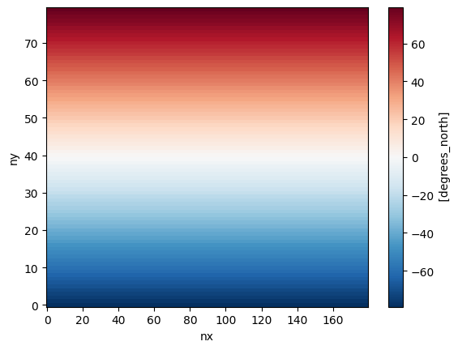
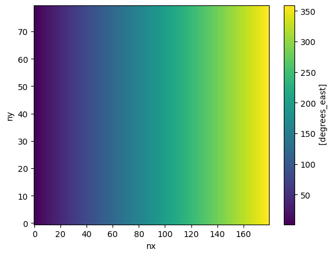
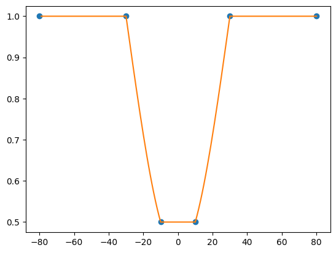
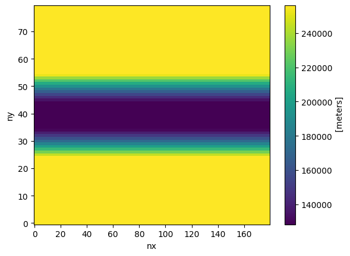
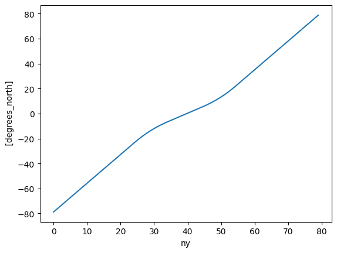
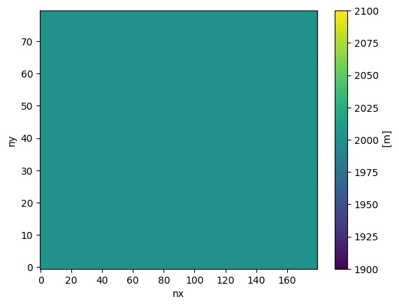

Spherical grid with equatorial refinement
In this notebook, we create a spherical grid with uniform resolution. We then increase the resolution around the equator by a factor of two by providing new, custom x and y coordinates array for the supergrid.
1. Import Modules
[1]:
%%capture
import numpy as np
import matplotlib.pyplot as plt
from mom6_forge.grid import Grid
from mom6_forge.topo import Topo
2. Create a horizontal MOM6 grid
Spherical grid. x coordinates interval= [0, 360] degrees. y coordinates interval = [-80,+80] degrees
[2]:
# Instantiate a MOM6 grid instance
grid = Grid(
nx = 180, # Number of grid points in x direction
ny = 80, # Number of grid points in y direction
lenx = 360.0, # grid length in x direction, e.g., 360.0 (degrees)
leny = 160, # grid length in y direction
cyclic_x = True, # reentrant, spherical domain
ystart = -80 # start/end 10 degrees above/below poles to avoid singularity
)
Plot grid properties:
[3]:
grid.tlat.plot();

[4]:
grid.tlon.plot();

Customize the grid resolution around the equator
To do so, we provide new x and y coordinate arrays for the supergrid
[5]:
# First, define a refinement function along longitutes:
from scipy import interpolate
f = 0.5
r_y = [-80,-30,-10,10,30,80] # transition latitudes
r_f = [1,1,f,f,1,1] # inverse refinement factors at transition latitudes
interp_func = interpolate.interp1d(r_y, r_f, kind=3)
r_f_mapped = interp_func(grid.supergrid.y[1:,0])
r_f_mapped = np.where(r_f_mapped < 1.0, r_f_mapped, 1.0)
r_f_mapped = np.where(r_f_mapped > f, r_f_mapped, f)
plt.plot(r_y, r_f, 'o', grid.supergrid.y[1:,0], r_f_mapped, '-');

Now apply the above refinement function (r_f_mapped) to the y coordinates of the original supergrid:
[6]:
super_dy = grid.supergrid.y[1:,0] - grid.supergrid.y[:-1,0]
super_dy_new = super_dy.mean() * r_f_mapped / r_f_mapped.mean() # normalize
super_y_new = grid.supergrid.y[:,0].copy()
super_y_new[1:] = grid.supergrid.y[0,0] + super_dy_new.cumsum()
xdat, ydat = np.meshgrid(grid.supergrid.x[0,:], super_y_new)
Update the supergrid:
[7]:
grid.update_supergrid(xdat, ydat)
Confirm that the equatorial resolution is increased by a factor of two:
[8]:
grid.dyt.plot()
[8]:
<matplotlib.collections.QuadMesh at 0x14e297ec3450>

[9]:
grid.tlat.isel(nx=0).plot()
[9]:
[<matplotlib.lines.Line2D at 0x14e298091ad0>]

3. Configure the bathymetry
[10]:
# Instantiate a Topo object associated with the horizontal grid object (grid).
topo = Topo(grid, min_depth=10.0)
flat bottom bathymetry
[11]:
# Set the bathymetry to be a flat bottom with a depth of 2000m
topo.set_flat(D=2000.0)
[12]:
topo.depth.plot()
[12]:
<matplotlib.collections.QuadMesh at 0x14e294d48110>

4. Save the grid and bathymetry files
[13]:
# MOM6 supergrid file:
grid.write_supergrid("./ocean_hgrid_2.nc")
# MOM6 topography file:
topo.write_topo("./ocean_topog_2.nc")
# CICE grid file:
topo.write_cice_grid("./cice_grid_2.nc")
# SCRIP grid file (for runoff remapping, if needed):
topo.write_scrip_grid("./scrip_grid_2.nc")
# ESMF mesh file:
topo.write_esmf_mesh("./ESMF_mesh_2.nc")
[ ]: